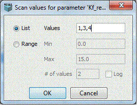
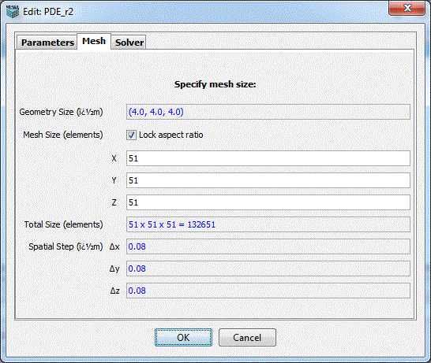
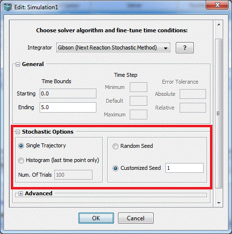

In the "Simulation" tab, highlight the simulation you want to edit and clicking the "Edit Simulation" button leads to you a simulation editor. The simulation editor will have 2 or 3 tabs depending on whether the simulation is non-spatial or spatial. "Parameters" and "Solver" tabs always appear while "Mesh" is only present for spatial simulations.
Parameters
Displays a summary list of the Parameters, the Default, Changed or Scanned Values used in the simulation. VCell is able to run complex simulations in which one or more parameters vary according to a specified list or range of possible values. Altering parameter values allows you to quickly and easily modify your model description without having to make a complete new BioModel or access the BioModel dialog. Parameter scans enable the user to do “brute force” exploration of the parameter space of a model in a single simulation specification without having to manually create, edit, and run many individual simulations that would test the different combinations of parameter values. Right-click menu allows for copying and pasting parameter values.
The Simulation Editor window allows the user to override the default value of any parameter by specifying a different value to be used during the simulation. The value can be a numerical value or mathematical expressions. Identify the Parameter Name and Double click on the New Value/Expression field to type in a new value or expression. Press Enter to accept the value. Note that values that have changed appear in red.
To specify a parameter scan, one must check the corresponding checkbox for the parameter (s), and a dialog box will appear where the user can enter a List or Range of values to be scanned.

List- Enter values separated by commas. Each value will be used in a simulation.
Range - Enter the values that will be used as the minimum and maximum values between which intermediates are calculated as equal interval values.
Range Log - When the checkbox ‘log’ is used, the intermediate values between the minimum and maximum are calculated as equal ratio values - e.g. for the example shown, the four values would be 0.1, 1.0, 10, and 100. This allows scanning over several orders of magnitude in a progressive way.
When more than one parameter is checked for scanning, the simulation will be performed with all possible combinations of values for all scanned parameters. The figure shows the Simulation Editor window for such a simulation, where 2 parameters were specified for scans, one with a list of 3 values, and one over a range of 2 values, resulting in a total of 6 different combinations for which the simulation is run.
A non-default parameter value can be specified as a free-form mathematical expression involving other parameters. This can be used as a powerful way of doing parameter scans. One parameter is scanned over a range of values, the non-default value has a mathematical expression that includes the scanned parameter. The non-default value will “follow” the scanned parameter and thus take many different values.
Mesh (see definition Mesh)
This tab is only available in spatial models with resolved geometries. Specify Geometry size and Mesh size for spatial models.
Display the size of the associated geometry, in microns. Geometry size is defined in the Geometry Editor.
Default size corresponds to the experimental image data size and/or any defined analytic geometries. The higher the number of elements (points in x and y) used to create a mesh, the finer the spatial resolution and greater amount of time required to compute. Coarse (lower number of points in x and Y) mesh sizes are suggested for initial simulations to obtain faster solutions.

Solver
This tab allows user to choose a desired solver, set time bounds, time step and error tolerance, select output options and other miscellaneous settings. All the options/choices in this panel vary according to the selected solver.
An integrator(basically solver) has to be chosen to solve your problem. Please reference the description of the Virtual Cell numerical solvers.
In the General section, user can specify,
1. Time Bounds --- starting time and ending time.
2. Time Step --- minimum, maximum and default time step.
3. Error Tolerance --- absolute and relative error tolerance.
1. Keep every N time samples and at most M time samples: keep every N simulation results time samples and the total time samples should not exceed M.
2. Output interval S secs: output simulation results by every S seconds.
1. Run parameter Scan Serially.
2. Stop at Spatial Uniform: stop the simulation when the system reaches spatial uniform based on the error tolerance.
3. Data processing script: display particle count in specified regions of interest.

The following settings are applicable for all non-spatial stochastic simulations.
1. Random Seed: a random number generated by PC time, which is used to produce a series of uniformly distributed random numbers.
2. Customized Seed: a user specified number, which is used to produce a series of uniformly distributed random numbers.
3. Single Trajectory: a single run of the stochastic simulation with an output of trajectories.
4. Number of Trails: the number of multiple trials for Monte Carlo simulation with an output of histograms.

1. Epsilon: minimum number of molecules, both reactant and product species, required for approximation as a continuous Markov process.
2. Lambda: minimum rate of reaction required for approximation to a continuous Markov process.
3. MSR Tolerance: maximum allowed effect of executing multiple slow reactions per numerical integration of the SDEs.
4. SDE Tolerance: maximum allowed value of the drift and diffusion errors(for hybrid adaptive method only).

1. Accuracy: A parameter that determines the quantitative accuracy of the simulation, on a scale from 0 to 10. Low values are less accurate but run faster. Default value is 10, for maximum accuracy. Bimolecular reactions are only checked for pairs of reactants that are both within the same virtual box when accuracy is 0 to 2.99, reactants in nearest neighboring boxes are considered as well when accuracy is 3 to 6.99, and reactants in all types of neighboring boxes are checked when accuracy is 7 to 10.
2. Gauss table size: This sets the size of a lookup table that is used to generate Gaussiandistributed random numbers. It needs to be an integer power of 2. The default value is 4096, which should be appropriate for nearly all applications.
3. Random Seed: a random number generated by PC time, which is used to produce a series of uniformly distributed random numbers.
4. Fast Mesh Sampling: It is used to improve performance by pre-calculating geometric quantities. It is selected by default.
5. Save Particle Files: It is an option to store particle locations to allow creating particle movies. Since it takes a lot of space, it is unselected by default.